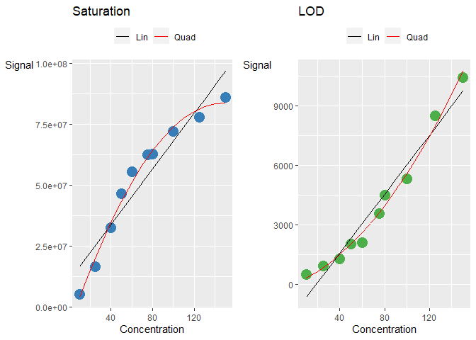

R package used to validate if a quality control sample dilution curve is linear or has signal suppression by statistical analysis and plots.
Installation
You can install the development version from GitHub with:
# install.packages("devtools")
devtools::install_github("SLINGhub/DCVtestkit")If you want to use a proper release version, referenced by a Git tag (example: 0.0.2) install the package as follows:
devtools::install_github("SLINGhub/DCVtestkit", ref = "0.0.2")Meta
- We welcome contributions from general questions to bug reports. Check out the contributions guidelines. Please note that this project is released with a Contributor Code of Conduct. By participating in this project you agree to abide by its terms.
- License: MIT
- Think
DCVtestkitis useful? Let others discover it, by telling them in person, via Twitter or a blog post.
or a blog post. - Refer to the NEWS.md file to see what is being worked on as well as update to changes between back to back versions.
Motivation
The Pearson correlation coefficient has been used widely to test for linearity. However, it is insufficient as indicated in Francisco Raposo (2016)
Consider a linear curve, saturated curve and a curve with limit of detection (LOD)
linear_data <- data.frame(
conc_var = c(
10, 25, 40, 50, 60,
75, 80, 100, 125, 150
),
signal_var = c(
25463, 63387, 90624, 131274, 138069,
205353, 202407, 260205, 292257, 367924
)
)
saturated_data <- data.frame(
conc_var = c(
10, 25, 40, 50, 60,
75, 80, 100, 125, 150
),
signal_var = c(
5192648, 16594991, 32507833, 46499896,
55388856, 62505210, 62778078, 72158161,
78044338, 86158414
)
)
lod_data <- data.frame(
conc_var = c(
10, 25, 40, 50, 60,
75, 80, 100, 125, 150
),
signal_var = c(
500, 903, 1267, 2031, 2100,
3563, 4500, 5300, 8500, 10430
)
)

The corresponding Pearson correlation coefficient are really high (>0.9) even though the curves are non-linear. There is a need to explore better ways to categorise these two curves.
cor(linear_data$conc_var, linear_data$signal_var)
#> [1] 0.9948151
cor(saturated_data$conc_var, saturated_data$signal_var)
#> [1] 0.9500072
cor(lod_data$conc_var, lod_data$signal_var)
#> [1] 0.9779585One example is the use of the Percent Residual Accuracy found in Logue, B. A. and Manandhar, E. (2018) which is more sensitive than Pearson correlation coefficient. Observe that the linear dilution curve gives a higher value compared to than the other two curves.
DCVtestkit::calculate_pra_linear(
dilution_data = linear_data,
conc_var = "conc_var",
signal_var = "signal_var"
)
#> [1] 94.32046
DCVtestkit::calculate_pra_linear(
dilution_data = saturated_data,
conc_var = "conc_var",
signal_var = "signal_var"
)
#> [1] 62.30351
DCVtestkit::calculate_pra_linear(
dilution_data = lod_data,
conc_var = "conc_var",
signal_var = "signal_var"
)
#> [1] 74.69452Another example is the use of the Mandel’s Fitting Test. Observe that the two non-linear dilution curves give a very low p value.
DCVtestkit::calculate_mandel(
dilution_data = linear_data,
conc_var = "conc_var",
signal_var = "signal_var"
)
#> # A tibble: 1 × 2
#> mandel_stats mandel_p_val
#> <dbl> <dbl>
#> 1 0.868 0.382
DCVtestkit::calculate_mandel(
dilution_data = saturated_data,
conc_var = "conc_var",
signal_var = "signal_var"
)
#> # A tibble: 1 × 2
#> mandel_stats mandel_p_val
#> <dbl> <dbl>
#> 1 52.9 0.000166
DCVtestkit::calculate_mandel(
dilution_data = lod_data,
conc_var = "conc_var",
signal_var = "signal_var"
)
#> # A tibble: 1 × 2
#> mandel_stats mandel_p_val
#> <dbl> <dbl>
#> 1 20.9 0.00256How it works
We try to categorise dilution curves based on the results of three parameters.
- Pearson Correlation Coefficient ( R )
- Percent Residual Accuracy ( PRA )
- Mandel’s Fitting Test
Pearson Correlation Coefficient ( R ) can be found in Van Loco, J., Elskens, M., Croux, C. et al., Linearity of calibration curves: use and misuse of the correlation coefficient. Accreditation and Quality Assurance 7, 281-285 (2002). 10.1007/s00769-002-0487-6.
Equation ( 1 ) is used.
Mandel’s Fitting Test can be found in Andrade, J. M. and Gómez-Carracedo, M. P., Notes on the use of Mandel’s test to check for nonlinearity in laboratory calibrations. Analytical Methods 5, 1145-1149 (2013). 10.1039/C2AY26400E.
Equation ( 5 ) is used.
Percent Residual Accuracy ( PRA ) can be found in Logue, B. A. and Manandhar, E., Percent residual accuracy for quantifying goodness-of-fit of linear calibration curves. Talanta 189, 527-533 (2018). 10.1016/j.talanta.2018.07.046.
Equation ( 6 ) is used.
Workflow Proposed
Two methods are proposed to categorise the dilution curves.
Workflow 1
Workflow 1 involves using R and PRA to categorise the dilution curves.
- If R < 0.8, classify as poor linearity.
- If R ≥ 0.8, PRA < 80, classify as poor linearity.
- If R ≥ 0.8, PRA ≥ 80, classify as good linearity.
Workflow 2
Workflow 2 involves using R, PRA and Mandel’s Fitting Test to categorise the dilution curves.
- If R < 0.8, classify as poor linearity.
- If R ≥ 0.8, PRA < 80, fit the quadratic model and use Mandel’s Fitting Test to see if the quadratic model is a better fit ( p value < 0.05 ).
- If not better, classify as poor linearity
- If better, check concavity of the quadratic model
- If concavity is negative, classify as saturation
- If concavity is positive, classify as limit of detection (LOD)
- If R ≥ 0.8, PRA ≥ 80, classify as good linearity
Usage
We first create our data set.
library(DCVtestkit)
# Data Creation
dilution_percent <- c(
10, 20, 25, 40, 50, 60,
75, 80, 100, 125, 150,
10, 25, 40, 50, 60,
75, 80, 100, 125, 150
)
dilution_batch_name <- c(
"B1", "B1", "B1", "B1", "B1",
"B1", "B1", "B1", "B1", "B1", "B1",
"B2", "B2", "B2", "B2", "B2",
"B2", "B2", "B2", "B2", "B2"
)
sample_name <- c(
"Sample_010a", "Sample_020a", "Sample_025a",
"Sample_040a", "Sample_050a", "Sample_060a",
"Sample_075a", "Sample_080a", "Sample_100a",
"Sample_125a", "Sample_150a",
"Sample_010b", "Sample_025b",
"Sample_040b", "Sample_050b", "Sample_060b",
"Sample_075b", "Sample_080b", "Sample_100b",
"Sample_125b", "Sample_150b"
)
lipid1_area_saturated <- c(
5748124, 16616414, 21702718, 36191617,
49324541, 55618266, 66947588, 74964771,
75438063, 91770737, 94692060,
5192648, 16594991, 32507833, 46499896,
55388856, 62505210, 62778078, 72158161,
78044338, 86158414
)
lipid2_area_linear <- c(
31538, 53709, 69990, 101977, 146436, 180960,
232881, 283780, 298289, 344519, 430432,
25463, 63387, 90624, 131274, 138069,
205353, 202407, 260205, 292257, 367924
)
lipid3_area_lod <- c(
544, 397, 829, 1437, 1808, 2231,
3343, 2915, 5268, 8031, 11045,
500, 903, 1267, 2031, 2100,
3563, 4500, 5300, 8500, 10430
)
lipid4_area_nonlinear <- c(
380519, 485372, 478770, 474467, 531640, 576301,
501068, 550201, 515110, 499543, 474745,
197417, 322846, 478398, 423174, 418577,
426089, 413292, 450190, 415309, 457618
)
dilution_annot <- tibble::tibble(
Sample_Name = sample_name,
Dilution_Batch_Name = dilution_batch_name,
Dilution_Percent = dilution_percent
)
lipid_data <- tibble::tibble(
Sample_Name = sample_name,
Lipid1 = lipid1_area_saturated,
Lipid2 = lipid2_area_linear,
Lipid3 = lipid3_area_lod,
Lipid4 = lipid4_area_nonlinear
)The dilution_annot should look like this.
print(dilution_annot, width = 100)
#> # A tibble: 21 × 3
#> Sample_Name Dilution_Batch_Name Dilution_Percent
#> <chr> <chr> <dbl>
#> 1 Sample_010a B1 10
#> 2 Sample_020a B1 20
#> 3 Sample_025a B1 25
#> 4 Sample_040a B1 40
#> 5 Sample_050a B1 50
#> 6 Sample_060a B1 60
#> 7 Sample_075a B1 75
#> 8 Sample_080a B1 80
#> 9 Sample_100a B1 100
#> 10 Sample_125a B1 125
#> # … with 11 more rowsThe lipid_data should look like this.
print(lipid_data, width = 100)
#> # A tibble: 21 × 5
#> Sample_Name Lipid1 Lipid2 Lipid3 Lipid4
#> <chr> <dbl> <dbl> <dbl> <dbl>
#> 1 Sample_010a 5748124 31538 544 380519
#> 2 Sample_020a 16616414 53709 397 485372
#> 3 Sample_025a 21702718 69990 829 478770
#> 4 Sample_040a 36191617 101977 1437 474467
#> 5 Sample_050a 49324541 146436 1808 531640
#> 6 Sample_060a 55618266 180960 2231 576301
#> 7 Sample_075a 66947588 232881 3343 501068
#> 8 Sample_080a 74964771 283780 2915 550201
#> 9 Sample_100a 75438063 298289 5268 515110
#> 10 Sample_125a 91770737 344519 8031 499543
#> # … with 11 more rowsMerge the data together using create_dilution_table
# Create dilution table
dilution_table <- create_dilution_table(
dilution_annot = dilution_annot,
lipid_data_wide = lipid_data,
common_column = "Sample_Name",
signal_var = "Area",
column_group = "Transition_Name"
)
print(dilution_table, width = 100)
#> # A tibble: 84 × 5
#> Sample_Name Dilution_Batch_Name Dilution_Percent Transition_Name Area
#> <chr> <chr> <dbl> <chr> <dbl>
#> 1 Sample_010a B1 10 Lipid1 5748124
#> 2 Sample_010a B1 10 Lipid2 31538
#> 3 Sample_010a B1 10 Lipid3 544
#> 4 Sample_010a B1 10 Lipid4 380519
#> 5 Sample_020a B1 20 Lipid1 16616414
#> 6 Sample_020a B1 20 Lipid2 53709
#> 7 Sample_020a B1 20 Lipid3 397
#> 8 Sample_020a B1 20 Lipid4 485372
#> 9 Sample_025a B1 25 Lipid1 21702718
#> 10 Sample_025a B1 25 Lipid2 69990
#> # … with 74 more rowsSummarise each dilution curve for each transition and batch with summarise_dilution_table
# Create dilution statistical summary
dilution_summary <- summarise_dilution_table(
dilution_table = dilution_table,
grouping_variable = c(
"Transition_Name",
"Dilution_Batch_Name"
),
conc_var = "Dilution_Percent",
signal_var = "Area"
)
print(dilution_summary, width = 100)
#> # A tibble: 8 × 9
#> Transition_Name Dilution_Batch_Name r_corr r2_linear r2_adj_linear
#> <chr> <chr> <dbl> <dbl> <dbl>
#> 1 Lipid1 B1 0.963 0.928 0.920
#> 2 Lipid2 B1 0.990 0.980 0.978
#> 3 Lipid3 B1 0.964 0.930 0.922
#> 4 Lipid4 B1 0.311 0.0970 -0.00333
#> 5 Lipid1 B2 0.950 0.903 0.890
#> 6 Lipid2 B2 0.995 0.990 0.988
#> 7 Lipid3 B2 0.978 0.956 0.951
#> 8 Lipid4 B2 0.608 0.370 0.291
#> mandel_stats mandel_p_val pra_linear concavity
#> <dbl> <dbl> <dbl> <dbl>
#> 1 71.2 0.0000297 70.5 -4174.
#> 2 2.53 0.150 92.8 -4.91
#> 3 106. 0.00000678 71.2 0.468
#> 4 13.2 0.00660 -251. -20.5
#> 5 52.9 0.000166 62.3 -4137.
#> 6 0.868 0.382 94.3 -1.94
#> 7 20.9 0.00256 74.7 0.321
#> 8 5.39 0.0533 -73.1 -22.9Classify each dilution curve according to Workflow 1 and Workflow 2.wf1_group1 gives the results of Workflow 1wf2_group2 gives the results of Workflow 2
dilution_classified <- evaluate_linearity(
dilution_summary = dilution_summary,
grouping_variable = c(
"Transition_Name",
"Dilution_Batch_Name"
)
)
print(dilution_classified, width = 100)
#> # A tibble: 8 × 11
#> Transition_Name Dilution_Batch_Name wf1_group wf2_group r_corr
#> <chr> <chr> <chr> <chr> <dbl>
#> 1 Lipid1 B1 Poor Linearity Saturation 0.963
#> 2 Lipid2 B1 Good Linearity Good Linearity 0.990
#> 3 Lipid3 B1 Poor Linearity LOD 0.964
#> 4 Lipid4 B1 Poor Linearity Poor Linearity 0.311
#> 5 Lipid1 B2 Poor Linearity Saturation 0.950
#> 6 Lipid2 B2 Good Linearity Good Linearity 0.995
#> 7 Lipid3 B2 Poor Linearity LOD 0.978
#> 8 Lipid4 B2 Poor Linearity Poor Linearity 0.608
#> pra_linear mandel_p_val concavity r2_linear r2_adj_linear mandel_stats
#> <dbl> <dbl> <dbl> <dbl> <dbl> <dbl>
#> 1 70.5 0.0000297 -4174. 0.928 0.920 71.2
#> 2 92.8 0.150 -4.91 0.980 0.978 2.53
#> 3 71.2 0.00000678 0.468 0.930 0.922 106.
#> 4 -251. 0.00660 -20.5 0.0970 -0.00333 13.2
#> 5 62.3 0.000166 -4137. 0.903 0.890 52.9
#> 6 94.3 0.382 -1.94 0.990 0.988 0.868
#> 7 74.7 0.00256 0.321 0.956 0.951 20.9
#> 8 -73.1 0.0533 -22.9 0.370 0.291 5.39Output Results
Results can be exported to Excel via write_summary_excel
write_summary_excel(
dilution_summary = dilution_classified,
file_name = "dilution_summary.xlsx")
Excel Report
Results can be plotted using add_ggplot_panel. This will create a column called panel that contains all the ggplot plots
ggplot_table <- add_ggplot_panel(
dilution_table = dilution_table,
dilution_summary = dilution_classified,
grouping_variable = c(
"Transition_Name",
"Dilution_Batch_Name"
),
dil_batch_var = "Dilution_Batch_Name",
dil_batch_col = c("#377eb8", "#4daf4a"),
conc_var = "Dilution_Percent",
conc_var_units = "%",
conc_var_interval = 50,
signal_var = "Area"
)
# Get the list of ggplot list for each group
ggplot_list <- ggplot_table$panelUse view_ggplot_pdf to export the plots in a pdf file
view_ggplot_pdf(
ggplot_list = ggplot_list,
filename = "dilution_plot.pdf",
ncol_per_page = 2,
nrow_per_page = 2
)
README-PDF Results1
README-PDF Results2
Results can also be plotted using add_plotly_panel. This will create a column called panel that contains all the plotly plots.
To create an interactive trelliscope display as seen in here, each columns must be converted to a cognostics class. This is done using the function convert_to_cog
# Create a trellis table
trellis_table <- add_plotly_panel(
dilution_table = dilution_table,
dilution_summary = dilution_classified,
grouping_variable = c(
"Transition_Name",
"Dilution_Batch_Name"
),
sample_name_var = "Sample_Name",
dil_batch_var = "Dilution_Batch_Name",
dil_batch_col = c(
"#377eb8",
"#4daf4a"
),
conc_var = "Dilution_Percent",
conc_var_units = "%",
conc_var_interval = 50,
signal_var = "Area",
have_plot_title = FALSE
) %>%
convert_to_cog(
grouping_variable = c(
"Transition_Name",
"Dilution_Batch_Name"
),
panel_variable = "panel",
col_name_vec = "col_name_vec",
desc_vec = "desc_vec",
type_vec = "type_vec"
)Use view_trellis_html on the R console to output the interactive trelliscope display
view_trellis_html(
trellis_table = trellis_table,
grouping_variable = c(
"Transition_Name",
"Dilution_Batch_Name"
),
trellis_report_name = "Dilution_Plot",
trellis_report_folder = "Dilution_Plot_Folder"
)
README-Trellis